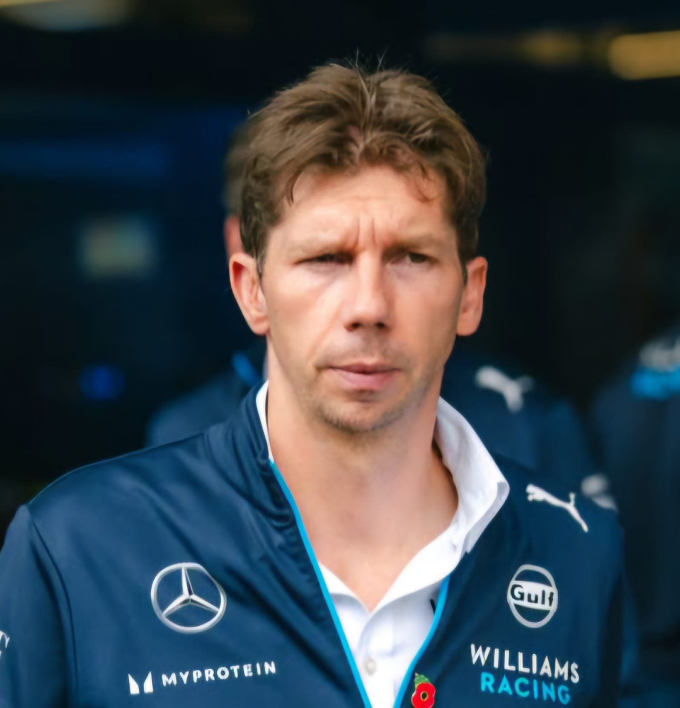

James Vowles
Team: Williams
Nationality: United Kingdom
Born: 1979
In charge since: 2023
History: James Vowles, a British engineer and strategist, took over as Team Principal at Williams in early 2023 after a long tenure at Mercedes. Starting his career with BAR in 2001, Vowles progressed through Honda and Brawn GP, where he played a key role in Jenson Button’s 2009 Drivers’ Championship win. He later served as Chief Strategist at Mercedes, overseeing multiple title-winning campaigns. At Williams, Vowles has focused on rebuilding the team's technical structure and culture, guiding them to fifth place in the 2025 Constructors’ Championship — their best result in over a decade.
